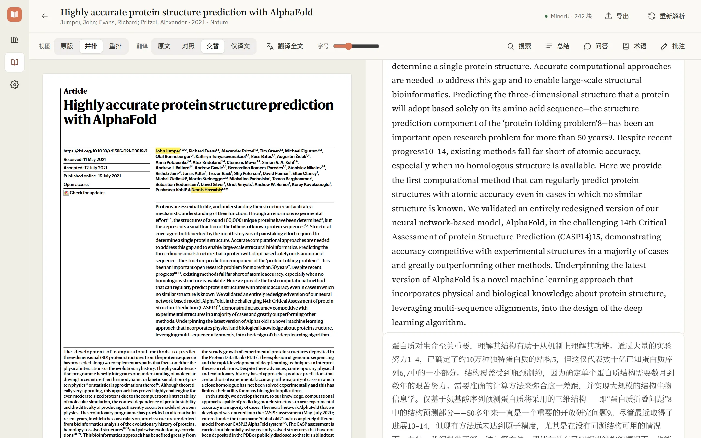
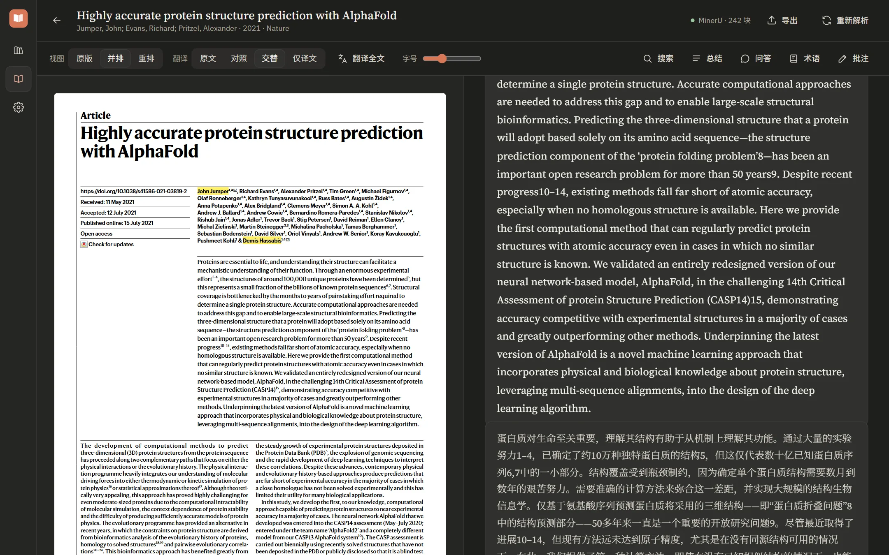

把论文， 读得像一本书。
FreeRead 是本地优先的学术文献阅读器：从 Zotero 导入文献库，把 PDF 重排为易读版式，再用你自己的大模型翻译、总结、问答和抽取知识图谱——每句结论都能跳回原文。


一个窗口，读完一篇论文
原版和重排并排放，翻译贴着原文，问答在右手边。界面退后，正文在前。
每一步，都有出处
解析、重排、翻译、问答，每个结果都能对回原文的那一段。
双栏 PDF，排成一栏好读的正文
解析引擎把页面拆成标题、段落、公式、图表等块，按阅读顺序重排。点重排里的任何一段，原版里对应的位置就会亮起来；反过来也一样。
按块翻译，看到哪译到哪
可视区域里的段落优先翻译，公式和引用先占位保护再还原；也可以整篇后台翻译，之后离线可读。术语表自动抽取，翻译时一并带上。
问答和总结，句句有出处
针对单篇论文提问，回答里的每个引用编号都经过校验，指向原文中的具体段落；悬停或点击就能看到它说的是哪一段。问答是一棵树：每张卡片都能追问、重答或另起一支。总结也一样，分层展开，可以跳回原文。
先快速可读，再换高质量
导入后内置的 PyMuPDF 几秒钟就能出可读版本；想要更好的公式和表格，可以一键把 MinerU 或 Docling 装到本机，或者连接 mineru.net、自部署的 mineru-api / docling-serve。
演示为界面示意，文字为示例内容。
读论文要用的，都在这里
文献库
从 Zotero 7 导入分类和条目，增量同步；Zotero 没开时读数据库快照，也能直接导入 PDF。
阅读器
原版、并排、重排三种视图，双向定位；公式、表格、图片照原样渲染。
文内检索
关键词加语义的混合检索，结果直接跳到原文段落。
解析引擎
内置 PyMuPDF；一键安装 MinerU / Docling，或连接远程服务，单篇可换引擎重解析。
翻译
块级翻译，可视区域优先；四种显示方式；整篇后台翻译后离线可读；术语表可编辑。
AI 总结
分层、结构化的总结，每条结论都带可跳转的原文引用。
问答树
每一问一答是一张卡片，可以追问、重答、另起，选中回答里的文字就此追问；引用都经过校验。
知识图谱
抽取一篇论文的方法、数据集、指标和它们的关系，每条关系都带出处；3D 云图浏览，点一下回到原文。
批注与导出
在重排视图里高亮、写批注；连同总结、正文和译文导出为 Markdown。
批量整理
复选框、Shift 连选、Ctrl 点选，批量复制引用或移除；任务条点开看全部进度。
欢迎向导
第一次打开时一步步配好大模型、解析服务，并决定是否从 Zotero 导入。
应用内更新
在设置 › 关于里检查新版本，下载后校验 sha256；安装版装完自动重新打开。
纸张、墨色，和一点强调色
固定的暖中性色阶做底和字，强调色只用来指认：选中项、引用编号、定位高亮和进度。就在下面这个窗口上试试。
外观
和应用里 设置 › 外观 是同一组选项。
真实界面
以下截图来自 FreeRead 0.2.0，跟随你的深浅色设置。
你的文献，留在你的电脑上
FreeRead 没有账号，也没有服务器。大模型服务由你自己选择和配置。
数据在本机
文献库、解析结果、译文、总结和批注都保存在本机 SQLite，断网也能读。
Key 进钥匙串
API Key 存在系统凭据管理器里，不写进配置文件。
发送前先问
第一次把文档内容发给某个大模型或解析服务前，都会先征得你的同意。
现在就开始读
支持 Windows 10 / 11 x64。免费、开源，以 AGPL-3.0-or-later 发布。
便携版
解压后运行 freeread-desktop.exe；文献库和设置仍保存在 %APPDATA%\FreeRead，和安装版共用。
下载便携版程序暂未签名，SmartScreen 提示时选"更多信息 → 仍要运行"。所有版本见 Releases。
- 导入文献
打开 Zotero 7（可选），在文献库里点"从 Zotero 同步"，或用"导入 PDF"。 - 打开阅读
快速解析完成后，切到"重排"或"并排"视图。 - 接入大模型
在 设置 › 大模型服务 添加服务并保存 API Key，就能翻译、总结和问答。